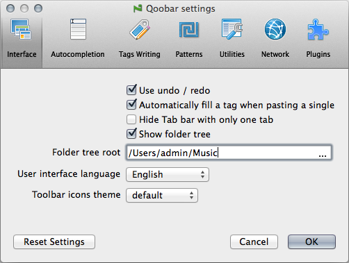

Interface
- Use undo/redo: this option lets you to switch on/off the undo system. If the undo / redo operations are switched off, Qoobar runs faster and consumes less memory.
- Automatically fill a tag in all selected files when pasting a single line: if this feature is on, you can select one file, copy its tags, then select several files and paste the copied tags right into all files, not only the 1st of them.
- Hide Tab bar with only one tab - If this option is set, the Tab bar will automatically be hidden if less than 2 tabs are opened.
- Show folder tree: shows/hides the Folder Tree in the main window.
- Folder tree root: allows you to set the top-level folder for the Folder tree
- User interface language: the user interface language
- Toolbar icons theme: the current set of Qoobar icons
© 2009-2015 Alex Novichkov